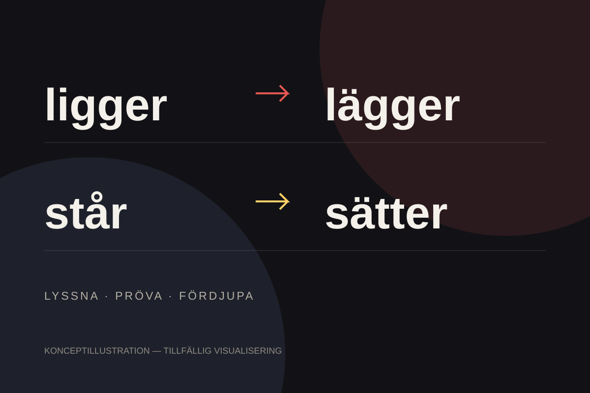

Steg 01 / Lyssna
Det pedagogiska poddavsnittet
Öppna podden på Spotify (öppnas i en ny flik)Spelaren laddas från Spotify. Om den inte visas kan du använda länken ovan.
Case 01 / Digitalt lärande
Fyra svenska verb. En sammanhängande lärandeupplevelse där en pedagogisk podd följs av ett kunskapstest och material för fördjupning.
Upplev projektet
Utmaningen
Skillnaden mellan ligger, lägger, står och sätter kan vara svår att förstå och använda. Orden beskriver närliggande situationer, men skiljer mellan ett läge och en handling.
Jag identifierade den här lärandesvårigheten och utvecklade en idé för att göra skillnaden tydligare. Utgångspunkten var att kombinera en muntlig förklaring med möjlighet att pröva sin förståelse.
Boken ligger på bordet.
Jag lägger boken på bordet.
Lösningen / Lärandeupplevelsen
Tre delar som hör ihop, med podden som ingång och kunskapstestet som ett aktivt nästa steg.
Pedagogisk podd
En podd om de fyra verben, producerad med AI-genererad röst och publicerad på flera plattformar. Uppspelningen kopplades till min webbplats.
Kunskapstest
Ett flervalstest med 30 frågor. Efter testet visas resultatet och vilka svar som är rätt respektive fel.
Kompletterande PDF
Material utformat i Figma med poddens transkription och övningar. PDF-materialet gjordes tillgängligt för köp på webbplatsen.
Upplev själv
Lyssna på det publicerade avsnittet och gå vidare till det riktiga kunskapstestet.
Steg 01 / Lyssna
Spelaren laddas från Spotify. Om den inte visas kan du använda länken ovan.
Steg 02 / Pröva
Gör flervalstestet på Alfra Svenska. Se ditt resultat och vilka svar som blev rätt eller fel.
Gör kunskapstestet (öppnas i en ny flik)Testet öppnas på den externa webbplatsen.
Designprocessen
Mitt arbete omfattade innehållsidé, manusupplägg, produktion, publicering och utformning av test och kompletterande material.
Jag identifierade lärandesvårigheten och utvecklade idén och manusupplägget för ett poddavsnitt om skillnaden mellan de fyra verben.
Jag använde AI-genererad röstproduktion för att skapa den pedagogiska podden, publicerade den på flera plattformar och kopplade uppspelningen till min webbplats.
Jag utformade ett kunskapstest med 30 flervalsfrågor som visar resultat och rätt respektive fel svar.
Jag skapade kompletterande PDF-material i Figma med transkription och övningar och gjorde det tillgängligt för köp på webbplatsen.
Resultatet
Det färdiga projektet kombinerar publicerat ljudinnehåll, ett interaktivt kunskapstest och kompletterande studiematerial.
Distribuerad på flera plattformar och kopplad till webbplatsen.
30 flervalsfrågor med resultat och visning av rätt och fel svar.
Transkription och övningar, utformade i Figma och tillgängliga för köp.
Reflektion
Projektet visar hur jag kopplar samman pedagogiskt innehåll och interaktion: från att ta del av en förklaring till att pröva sin förståelse och arbeta vidare på egen hand.
Här redovisas det som producerats. Någon uppmätt effekt på lärande eller användarfeedback redovisas inte.